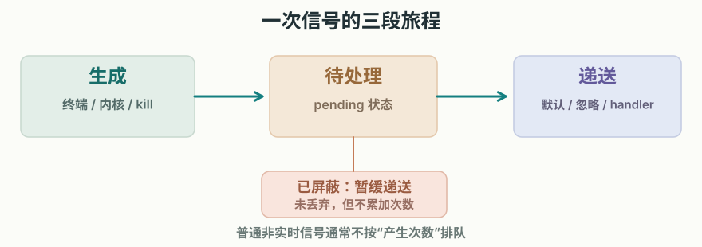
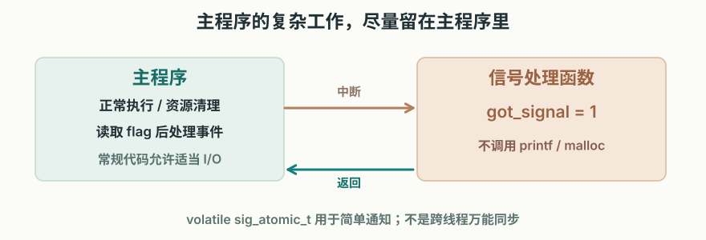
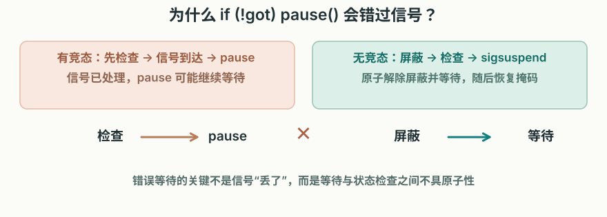
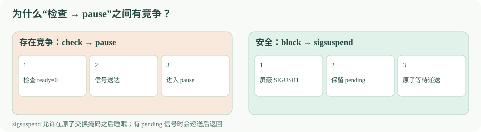
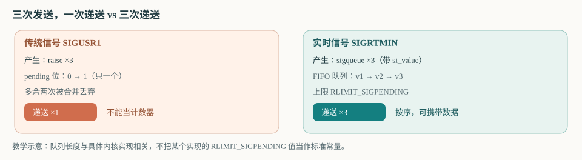

异常控制流 / 16
一个信号到来时，程序停在了哪里？
你按下 Ctrl+C 时，程序并没有主动调用某个“退出函数”。内核向前台进程组发出 SIGINT，进程根据自身的处置方式决定终止、忽略还是运行处理函数。真正困难的是：通知可能在代码的任何可中断位置到达。
下文采用 POSIX 信号模型和 Linux 行为解释；示例程序按单线程进程编写。信号编号、默认动作和系统调用重启行为不能脱离平台随意类推。
16.1 发送不等于处理：生成、等待、递送
把信号看作一个事件通知，而不是可靠的消息队列。信号由终端、内核异常、定时器或进程（例如 kill）生成；目标可能立即接收，也可能在被屏蔽时保持待处理（pending）。当信号解除屏蔽且可递送，内核才执行对应处置。普通非实时信号多次生成不保证保留次数；实时信号具有不同的排队语义。

| 信号 | 典型来源 | 默认动作（常见 POSIX/Linux） |
|---|---|---|
SIGINT | 终端 Ctrl+C | 终止 |
SIGTERM | 常规终止请求 | 终止，可自定义处理 |
SIGCHLD | 子进程状态变化 | 默认忽略；子进程回收仍须按系统语义处理 |
SIGSEGV | 非法内存访问等硬件/内核事件 | 通常终止并生成 core（受配置限制） |
SIGKILL / SIGSTOP | 外部强制终止 / 停止 | 不能捕获、屏蔽或忽略 |
进程定向信号与线程定向信号不同：在多线程进程中，每个线程有自己的信号屏蔽字；进程定向信号可递送给一个未屏蔽该信号的线程。不要将“内核只在返回用户态前查一次 pending 位”当作全部实现细节，更不能假设所有信号数字在各平台一致。Linux signal(7) 给出递送与掩码的定义。
这只是解释“屏蔽”的集合示意；实际递送还受信号处置、线程选择及内核调度等因素影响。
16.2 为什么处理函数越短越安全？
信号可能在标准 I/O 内部锁未释放、堆分配器正在修改元数据时到达。若处理函数再调用 printf()、malloc() 或 free()，就可能死锁或破坏状态。POSIX 规定了一组异步信号安全操作（如符合条件时的 write()），但大部分标准库函数并不在其中。

volatile sig_atomic_t 适合简单的信号通知标志，不是通用跨线程同步原语。#define _POSIX_C_SOURCE 200809L
#include <signal.h>
#include <stdio.h>
static volatile sig_atomic_t interrupted = 0;
static void on_int(int signo) {
(void)signo;
interrupted = 1; /* 不在这里 printf / malloc */
}
int main(void) {
struct sigaction action = {0};
action.sa_handler = on_int;
sigemptyset(&action.sa_mask);
action.sa_flags = 0;
if (sigaction(SIGINT, &action, NULL) == -1) {
perror("sigaction"); return 1;
}
/* 实际程序在普通控制流里检测 interrupted 并清理 */
return interrupted ? 0 : 0;
}上面仅演示注册与处理函数约束，不是完整服务循环。volatile 不会让任意共享数据读写自动变成原子操作，也不能代替线程间的同步。sigaction() 比旧式 signal() 更便于精确指定行为；SA_RESTART 也只会重启部分被信号中断的调用，绝不能推论所有 read() / sleep() 都不再返回 EINTR。
查阅 signal-safety(7) 的异步信号安全清单；对未列明或有附加条件的函数，默认不要从处理函数中调用。
16.3 最隐蔽的 bug：检查标志和睡眠之间的空隙
假设主程序先检查 got == 0，然后调用 pause()。恰好在两步之间收到信号，处理函数把标志改成 1 后返回；随后程序仍执行 pause()，可能一直睡到下一个信号。这不是编译器错误，而是检查与等待不是原子操作。

sigsuspend 原子替换掩码并等待 → 恢复。这消除了“检查后、睡眠前”的信号竞态。交互：信号落在什么位置？
这是“if (!got) pause()”的调度示意，不是执行真实信号。
/* 已在注册处理函数、初始化 block/old 后 */
if (sigprocmask(SIG_BLOCK, &block, &old) == -1)
/* 处理错误 */;
while (!got_signal)
sigsuspend(&old); /* 解除 SIGUSR1 屏蔽并原子等待 */
if (sigprocmask(SIG_SETMASK, &old, NULL) == -1)
/* 处理错误 */;这段是主循环的核心片段，完整可编译演示在下方。多线程程序应按线程管理掩码（例如 pthread_sigmask），而不是简单复制单线程方案。
16.4 setjmp / longjmp：跳过调用栈，不等于异常处理
setjmp 保存用于非本地跳转的执行环境；longjmp 使控制流返回保存点。被跳过的函数不会按常规顺序执行后续语句，资源也不会自动清理。保存点所属函数已经返回后，使用该环境进行跳转是未定义行为。 在发生变化的非 volatile 自动局部变量上也有特殊规则。
#include <setjmp.h>
#include <stdio.h>
static jmp_buf recovery;
static void fail_deep(void) { longjmp(recovery, 2); }
int main(void) {
int status = setjmp(recovery);
if (status == 0) fail_deep();
else printf("recovered: %d\n", status); /* 2 */
return 0;
}更危险的是在信号处理函数内用 longjmp 跳出已中断的非异步信号安全函数，然后继续调用其他此类函数；POSIX 对此有明确限制，不能当作通用超时或“捕获段错误继续跑”的方案。sigsetjmp(env, 1) / siglongjmp 可按约定保存并恢复信号掩码，但不解决跳过资源清理或重入的所有风险。C++ 异常还承担析构和类型匹配等语义，不能简单等同于这两个 C 函数。
16.5 动手验证：先屏蔽，再让信号变为待处理
以下实验故意让 SIGUSR1 在屏蔽期间产生，再使用 sigsuspend 原子等待并递送。不依赖终端按键或不确定的时间窗口：
/* Linux/POSIX，完整实现见 examples/olah-ch16-signals.c */
#define _POSIX_C_SOURCE 200809L
#include <signal.h>
#include <stdio.h>
#include <unistd.h>
static volatile sig_atomic_t got_signal = 0;
static void handler(int sig) { (void)sig; got_signal = 1; }
int main(void) {
struct sigaction sa = {0};
sigset_t block, old;
sa.sa_handler = handler;
sigemptyset(&sa.sa_mask);
if (sigaction(SIGUSR1, &sa, NULL) == -1) return 1;
sigemptyset(&block);
sigaddset(&block, SIGUSR1);
if (sigprocmask(SIG_BLOCK, &block, &old) == -1) return 1;
if (raise(SIGUSR1) != 0) return 1;
while (!got_signal) sigsuspend(&old);
if (sigprocmask(SIG_SETMASK, &old, NULL) == -1) return 1;
puts("signal-delivered=1");
}用 cc -std=c11 -Wall -Wextra -pedantic examples/olah-ch16-signals.c -o signals && ./signals 运行。标准信号不累计次数；若要传送队列中的多个事件，应选其他同步或消息机制。
自测
如果信号在“检查标志为零”与 处理函数已返回，pause() 之间被递送，程序为什么可能永久等待？查看推导
pause() 不会因为过去已经处理的事件立即返回。用 sigprocmask 配合 sigsuspend 才能把解除屏蔽和等待做成一个原子步骤。
逐步核验 · 16 / SYSTEM MODEL
为何检查完标志再 pause，仍可能永远醒不过来？

假设信号处理器只将一个 volatile sig_atomic_t ready 标志置为 1。看似合理的 while (!ready) pause(); 实际包含一个无法通过普通源码顺序排除的竞争：主程序刚检查到 ready==0，信号便在执行 pause() 之前送达；处理器将标志设为 1 后返回，主程序却继续进入 pause()，此时已经没有新的未屏蔽信号能够把它唤醒。
| 时刻 | 存在竞争的做法 | 阻塞 + sigsuspend |
|---|---|---|
| ① | 检查 !ready 为真 | 先 sigprocmask(SIG_BLOCK,...) |
| ② | 信号送达；handler 设 ready=1 | 信号产生但因屏蔽而保持 pending |
| ③ | 调用 pause()，可能无限等待 | sigsuspend(&unblocked) 原子替换掩码并等待 |
| ④ | 需要额外事件才能醒来 | pending 信号递送；handler 设标志，随后返回循环 |
sigsuspend 最重要的是临时换掩码与睡眠的原子性；当捕获信号的处理器返回时，原先信号掩码自动恢复，再由应用显式恢复进入临界区之前保存的掩码。循环必须重新检查条件，因为无关信号也可能使等待返回。对于传统非实时信号，多次相同信号不保证逐次排队，因此这个标志仅适合通知“至少发生过”，不能充当可靠计数队列。
cc -std=c11 -D_POSIX_C_SOURCE=200809L -Wall -Wextra -Werror -pedantic \
examples/deep-ch13-18-posix.c -o /tmp/deep-posix
/tmp/deep-posix signal
python3 examples/deep-ch13-18-models.py 16仓库 C 示例先屏蔽 SIGUSR1，通过 raise 使它变成 pending，再以 sigsuspend 原子解除屏蔽并唤醒。它不通过实际挂起程序来“验证错误路径”，以免演示代码无限阻塞；该示例也不涵盖多线程定向信号分发。接口依据 sigsuspend(2)、signal-safety(7)。
逐步核验 · 16b / QUEUING & THREADS
同一个信号发三次，为什么只处理一次？

RLIMIT_SIGPENDING。上一节的 volatile sig_atomic_t ready 只能表达“至少发生过一次”。原因在于传统（非实时）信号不排队：若某信号处于 pending（尚未递送，例如被屏蔽）而同一信号再次产生，内核只保留一个待处理实例，额外发生的事件被丢弃（合并）。因此把到达次数记进整数不可靠。
| 信号类别 | 多次产生 | 递送与附加信息 |
|---|---|---|
传统信号（如 SIGUSR1） | 合并为一个 pending | 可能只递送一次 |
实时信号（SIGRTMIN..SIGRTMAX） | 按信号号排队 | FIFO 依次递送，可携带 si_value |
| 队列上限 | 超过 RLIMIT_SIGPENDING 的发送可能失败 | sigqueue 可返回错误 |
多线程下的归属：进程级信号（如另一进程发来的）在未屏蔽它的线程中任选一个递送；线程级信号（pthread_kill）则定向到指定线程。信号掩码是每线程的，用 pthread_sigmask 修改。常见稳健做法：在主线程启动时屏蔽要处理的信号，让该掩码被所有线程继承，再用一个专用线程在循环里 sigwait/sigwaitinfo 同步取出——这既避免处理函数里的 async-signal-safe 限制，又让“队列/计数”逻辑回到普通代码。
处理函数内只能调用 async-signal-safe 函数；printf、malloc、加锁等都不在保证之列。跨线程计数应使用 C11 原子或由同一 mutex 保护的谓词，而不是靠信号合并行为推导出一个固定值。
cc -std=c11 -D_POSIX_C_SOURCE=200809L -pthread -Wall -Wextra -Werror -pedantic \
examples/deep-ch13-18-b-signals.c -o /tmp/deep-sig
/tmp/deep-sig queue # 分别在屏蔽下发三次，比较传统与实时信号
python3 examples/deep-ch13-18-b.py 16b本节限于 POSIX/Linux 单进程内的信号语义，不把某个实现的队列长度当作标准常量。依据 signal(7)、sigqueue(2) 与 pthread_sigmask(3)。
归纳：信号只通知，不替你完成同步
区分生成/待处理/递送，缩短处理函数，并消除检查与等待之间的竞态。下一章进入虚拟地址空间：内核还会通过另一类控制流变化——缺页异常——帮助程序按需获得内存。
延伸阅读
signal(7)、signal-safety(7)、sigsuspend(2) 与 longjmp(3)；章节示例限定在 POSIX 单线程情形。